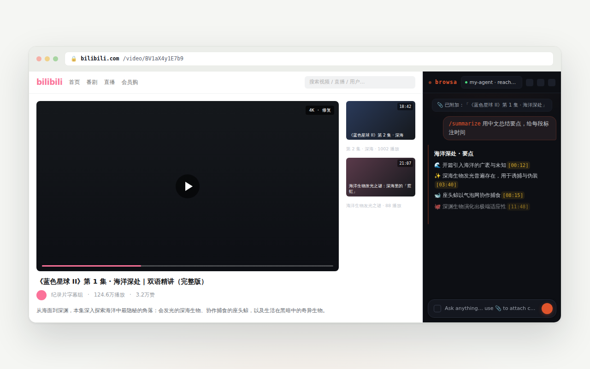

指南 / 视频工作流
视频工作流
边看视频边和 AI 讨论，是 browsa 最完整的场景：总结带时间戳、字幕可回跳、 没有字幕也能转写。YouTube 与 B 站都支持。

带时间戳的视频笔记
在视频页点 📎 附加，然后像平常一样问：「总结一下」「老师讲了哪些方法」。YouTube 与 B 站的字幕是结构化提取的（不是从画面上抠字），所以回答里的 [mm:ss] 时间戳可以点击——点一下，视频跳到那个时刻。
只要当前标签页就是那个视频，点击时间戳就在原页面跳转；如果侧边栏跟着你切到了别的标签页，才会新开一个。
字幕抽屉
附加过视频的会话里，顶栏会出现字幕抽屉入口。它把整条字幕铺成一列可点击的时间线：
- 播放跟随：视频播到哪一行，哪一行就高亮，列表自动滚动跟上；
- 点击任意行：视频跳到那句；
- 记一笔：把当前这句连同时间戳填进输入框，方便就此追问；
- 搜索：在字幕里找某句话，全部匹配行高亮标出。
没有字幕的视频
B 站很多视频没有字幕，附加时会弹出选择卡片，两条路：
- 音频转写（ASR）：把音频流拉下来本地转写——需要在设置里填一个火山方舟 Key（按量计费，一条 20 分钟的视频通常只花几分钱）。速度快，token 消耗少。
- 视频精读：画面（幻灯片、屏幕上的代码、板书）和语音一起理解，适合讲课、演示类视频。更准确，但更慢、token 消耗更高。
默认永远是音频转写——精读是主动多花 token 换画面信息的选择，不是默认行为。
长视频
一小时以上的视频，字幕会在附加时自动压缩成要点，时间标记保留——总结和跳转照常可用，上下文却不会爆掉。细节见设置与隐私里的「长附件自动总结」。
换了一个视频？重新点一次 📎 即可——附加的永远是「当前标签页」的内容。